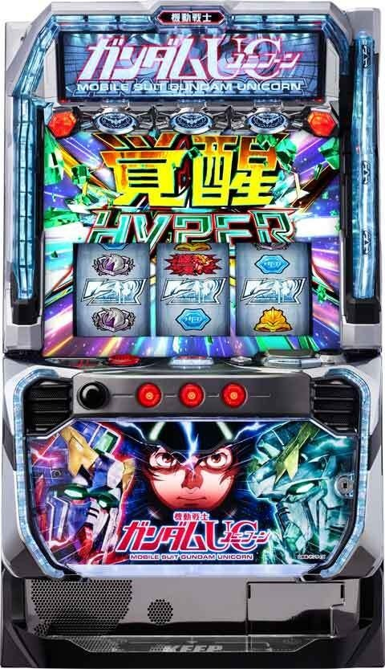
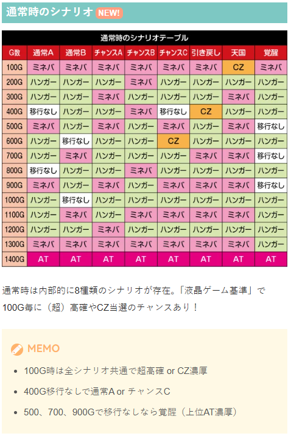
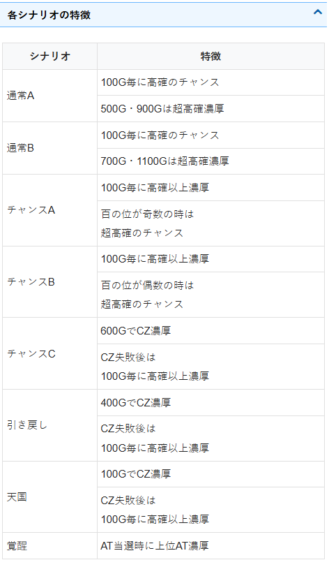
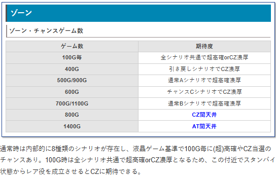
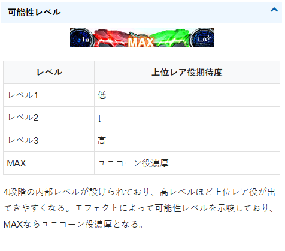
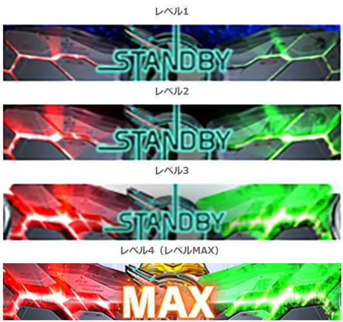
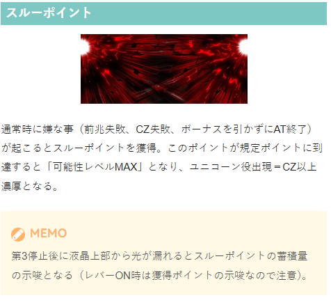
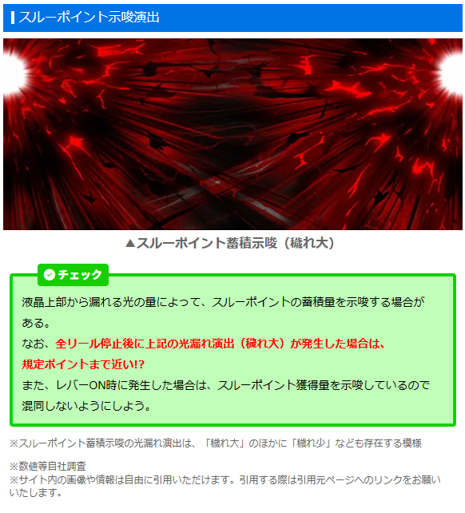
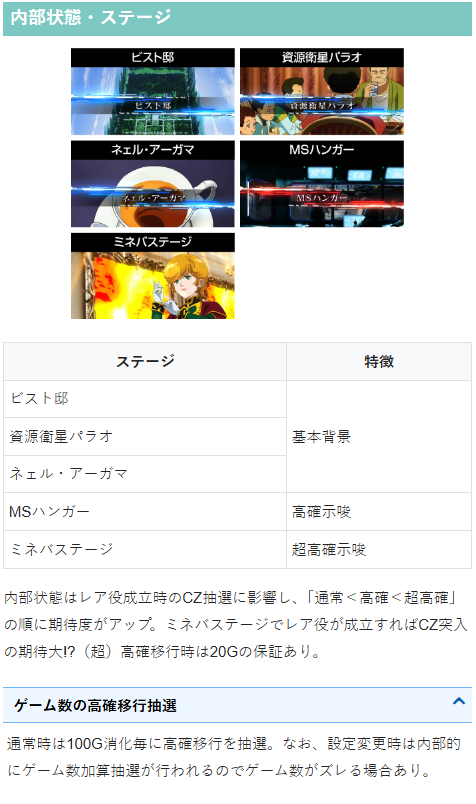

機動戦士ガンダムユニコーン 覚醒DRIVE

【天井情報】
CZ間800G＋αでCZに当選。設定変更時は400G＋αに短縮。
AT間1400G＋αでATに当選。設定変更時は1000G＋αに短縮。
※AT天井は「液晶上のゲーム数」が対象。
CZ6スルーでスルー天井到達。7回目のCZ当選でCZには移行せず、直接ボーナス当選となる。
【リセット判別】
不明
【有利区間について】
エンディングなどで有利区間をリセットした場合は上位ATへのCZ「覚醒の光」へ移行。
狙い目
※AT間は液晶左下のゲーム数を確認。メニューボタンを2回押せばデモ画面を解除できる。
※CZ間はデータ機上のままで良さそう。
※CZ中でもAT間ハマりが進む影響かデータ上は100Gくらい早くAT間天井に到達している。
【リセット狙い】
CZ間
0スルー 150Gから
1スルー以降 440Gから(AT間の天井短縮あるためCZ間単体で狙わない）
AT間
490Gから（CZ間0G想定）
440Gから（CZ間300G想定）
【ゲーム数天井狙い】
CZ間
520Gから
AT間
800Gから（CZ間0G想定）
750Gから（CZ間300G想定）
500Gから（CZ間500G想定）
※ボーダーラインの場合はシナリオを考慮した調整が必要かも？
※液晶800Gの所でハンガーステージ、ミネバステージに移行しなかった場合は通常A？仮に通常Aの場合はボーダーを少し上げた方が良いかも？
【スルー天井狙い】
5スルーから
【ゾーン狙い】
液晶90Gから100Gの高確（超高確）確認
※100Gで高確（超高確）移行時はステチェンするものと思われる。何ゲーム回したらステチェンするか不明。
【示唆関連の押し引きについて】
可能性レベル
MAXは消化。レベル3は打てるか不明。
シナリオ
500.700.900Gでハンガーorミネバステージに移行しなかったら覚醒シナリオ？この場合はAT当選まで打った方が良さそう？
CZやAT終了画面でPUSHボタンを押すと何かしらを示唆する画面が出現。（現状不明）
※シナリオからの高確（超高確）移行は液晶ゲーム数を基準に発生
スルーポイント
蓄積示唆大は解放まで。（第3停止後に液晶上部から漏れる光の量で示唆をしている）
※第3停止後に液晶上部から光が漏れるとスルーポイントの蓄積量の示唆となる（レバーON時は獲得ポイントの示唆なので注意）。
※スルーポイントは前兆演出失敗時やCZ失敗時などに獲得する。
【有利区間関連狙い】
不明
やめ時
通常のAT後は特に続行するものが無ければやめ。
上位AT後（覚醒の光失敗後）はスタンバイレベルがMAX（ユニコーン役が出現しCZ濃厚）なので即ヤメ厳禁。
現状、シナリオの示唆は出ていないが天国示唆があれば天国確認、覚醒示唆ならAT当選まで？
その他
通常時のシナリオ


ゾーン

可能性レベル


スルーポイント示唆


穢れ大画像引用元 一撃
内部状態・ステージ

参考元
かめとうさぎのパチスロブログ
基本情報
- メーカー: ビスティ
- 機械割: 97.7% 〜 114.9%
- 導入開始日: 2026年04月20日（月）
- ゲーム性概要: ●通常時はレア役とゲーム数消化で当選するCZ成功でボーナスに当選 ●ボーナス後は必ずATへ ●ATは初期20Gで、純増は約2.0枚/G ●AT中もCZ成功でボーナスに当選し、ボーナスに2回当選すると強ATへ昇格 ●強AT中にボーナスを4回引くと上位ATへ昇格する ●上位AT中のボーナスは約1/2で500枚or1000枚を獲得 ●AT終了後は引き戻しバトル勝利でATに復帰


打ち方
打ち方・小役
打ち方（小役狙い）
［最初に狙う絵柄］ 基本的に取りこぼしはないので全リールフリー打ち（左1st）でOKだ。
［小役の停止例］ ※停止ライン不問
［可能性役ポイントの蓄積］ 可能性役を引くごとにポイントが貯まっていき、一定数に達するとスタンバイ状態へ移行。スタンバイ状態でリプレイを引くと破壊役or覚醒役orユニコーン役が停止する（リプレイが成立した時点でスタンバイ状態はリセット）。 スタンバイ状態で可能性役を引いた場合はリプレイ時に出てくるレア役の格上げ（可能性レベルアップ）を抽選する。
※破壊役・覚醒役・ユニコーン役の配当は回胴演出を除く
※破壊役・覚醒役・ユニコーン役はすべてリプレイ・ベル・可能性役が揃わないことが条件
※スタンバイ状態以外でも各レア役は停止
確定役
ユニコーン役の恩恵
| 成立タイミング | 恩恵 |
|---|---|
| 通常時 | CZ |
| 出撃モード | 初当りボーナス |
| CZ「彗星決戦」 | エピソードボーナス＋上位AT |
| 初当りボーナス中 | ATストック1個or2個 |
| ミネバボーナス | ATストック2個 |
| 可能性ジャッジ | 上位AT |
| AT「可能性の獣」 | エピソードボーナス当選 |
| エピソードセブン前兆中 | エピソードボーナス ＋ATストック |
| エピソードセブン | エピソードボーナス ＋ATゲーム数上乗せ |
| エピソードセブン最終ゲーム | エピソードボーナス＋上位AT |
| エピソードボーナス | AT50G上乗せ |
| フル・フロンタルバトル | 継続濃厚+ATストック2個 |
| フル・フロンタルバトル最終ゲーム | 上位AT突入 |
| 強AT「覚醒HYPER」 | エピソードボーナス当選 |
| 上位AT「覚醒HYPER -Over The Rainbow-」 | ユニコーンボーナス500枚 |
| MSジャッジ | ユニコーンボーナス1000枚 |
| 覚醒の光 | 覚醒ドライブ （※スタンバイ状態でのレア役ストックを除く） |
| 覚醒ドライブ | 継続濃厚 |
解析情報通常時
小役関連
小役確率（設定1）
| 役 | 確率 | |
|---|---|---|
| 可能性役 | 非ナビ高確中 | 1/65.5 |
| 可能性役 | ナビ高確中 | 1/7.3 |
| 破壊役 | 1/66.3 | |
| 覚醒役 | 1/227.0 | |
| ユニコーン役 | 1/3232.3 | |
| リプレイ（非ナビ高確中） | 1/7.3 | |
| ベル揃い | 1/33.1 |
※破壊役～ユニコーン役はスタンバイ中の変換を含んだ合算値 ※ユニコーン役は覚醒の光失敗後の初回分を除いた数値
ナビ高確中は押し順ナビ経由で可能性役が停止するため、出現確率が大幅にアップ。 破壊役・覚醒役・ユニコーン役の合算確率は約1/50.5、小役揃いの合算は1/5.6だ。。
レア役確率詳細 （設定1）
| ゲーム数 | スタンバイ非経由 | スタンバイ経由 |
|---|---|---|
| 破壊役 | 1/99.9 | 1/197.1 |
| 覚醒役 | 1/595.8 | 1/366.6 |
| ユニコーン役 | 1/8192.0 | 1/5338.8 |
内部状態関連
ナビ高確
ナビ高確中移行時は上画像のように液晶上に帯が出現。滞在中はリプレイ成立時に押し順ナビが発生して必ず可能性役が停止する。
ナビ高確 性能
| 移行契機 | 可能性役成立時、ゲーム数消化時（末尾50）の抽選、 AT終了後（移行濃厚） |
|---|---|
| 継続ゲーム数 | 30or40or50G |
| 滞在中の恩恵 | リプレイフラグがすべて押し順経由の可能性役に変化 |
ナビ高確当選率
| 契機 | 当選率 |
|---|---|
| 可能性役 | 12.6% |
| ゲーム数消化（末尾50G到達時） | 74.8% |
| AT終了後 | 100% |
ナビ高確ゲーム数振り分け
| ナビ高確ゲーム数 | 可能性役orゲーム数消化 | AT終了後 |
|---|---|---|
| 30G | 69.7% | 95.7% |
| 40G | 17.7% | 3.2% |
| 50G | 12.6% | 1.2% |
高確・超高確
通常時は通常・高確・超高確という3つの内部状態でCZ当選率を管理。 高確・超高確は破壊役成立時やゲーム数消化（100Gごと）で抽選される。 MSハンガーは高確示唆、ミネバステージは超高確示唆だ。
高確・超高確 性能
| 移行契機 | 破壊役成立時、 ゲーム数消化時（100Gごと）の抽選 |
|---|---|
| 継続ゲーム数 | 20G以上 |
| 滞在中の恩恵 | CZ当選率が優遇 |
| 備考 | 最初の100G消化時は必ず超高確へ移行 ※CZ当選時を除く |
高確移行率（設定1）
| パターン | 移行率 |
|---|---|
| 破壊役→高確・超高確 | 30%以上 |
モード
通常モード 性能
| 移行契機 | 設定変更時、AT終了後 |
|---|---|
| 滞在中の恩恵 | ゲーム数消化契機の高確・超高確移行率や CZ当選率が変化 |
| 備考 | 全モード共通で 最初の100G到達時は超高確orCZ当選濃厚 |
設定変更時、AT終了後に決まるモードによって、ゲーム数消化契機の高確・超高確移行率やCZ当選率が変化。 覚醒モードはやや特殊で、AT当選＝上位ATになる。
通常モードごとの特徴
| モード | 特徴 |
|---|---|
| 通常A | ● 100Gごとに高確移行のチャンス ● 500Gと900Gで超高確移行濃厚 |
| 通常B | ● 100Gごとに高確移行のチャンス ● 700Gと1100Gで超高確移行濃厚 |
| チャンスA | ● 100Gごとに高確以上に移行濃厚 ● 100の位が奇数の時は超高確移行のチャンス |
| チャンスB | ● 100Gごとに高確以上に移行濃厚 ● 100の位が偶数の時は超高確移行のチャンス |
| チャンスC | ● 600GでCZ当選濃厚 ● CZ失敗後は100Gごとに高確以上に移行濃厚 |
| 引き戻し | ● 400GでCZ当選濃厚 ● CZ失敗後は100Gごとに高確以上に移行濃厚 |
| 天国 | ● 100GでCZ当選濃厚 ● CZ失敗後は100Gごとに高確以上に移行濃厚 |
| 覚醒 | ● AT当選で上位AT濃厚 |
CZ抽選
CZ当選率（設定1）
| 内部状態 | 破壊役 | 覚醒役 | ユニコーン役 |
|---|---|---|---|
| 通常 | 0.3% | 22.7% | 100% |
| 高確 | 23.6% | 52.3% | 100% |
| 超高確 | 34.7% | 85.5% | 100% |
ポイント（スタンバイ）関連
ポイント解説
可能性役を引くごとにリール下部のユニコーンロゴにポイントが貯まっていき、MAXになると「スタンバイ状態」へ移行（通常時だけでなくボーナス中やAT中も移行）。 スタンバイ状態でリプレイを引くと、 破壊役or覚醒役orユニコーン役 のいずれかに書き換えられる。 また、スタンバイ状態には4段階の「可能性レベル」があり、レベルが高いほど書き換え時に強いレア役が出現しやすくなる。
［スタンバイ状態］
［可能性レベル］ エフェクトで可能性レベルの段階を示唆（4段階）。MAXになるとユニコーン役濃厚だ。
［スタンバイ中の可能性役］ スタンバイ中に可能性役を引いた場合は、可能性レベルアップ抽選＆通常時のゲーム数を加算する。
可能性役時の加算ゲーム数振り分け
| ゲーム数 | 振り分け |
|---|---|
| ＋5G | 50.0% |
| ＋10G | 29.9% |
| ＋20G | 15.0% |
| ＋30G | 5.1% |
前兆ステージ
出撃モード・覚醒モード解説
［出撃モード］
［覚醒モード］
レア役やゲーム数消化契機で移行するCZの前兆ステージは2種類。 覚醒モードなら期待度が大幅にアップする。
覚醒モードの本前兆期待度
| 移行パターン | 期待度 |
|---|---|
| 前兆ステージ開始時から | 71.0% |
| 出撃モード中から | 90.0% |
彗星決戦（CZ）
CZ概要
10G間で小役を2回引けばボーナスというシンプルなCZで、最終ゲームは1回目の小役でもボーナス濃厚。 レア役は一発クリアのチャンスとなるだけでなく、小役2回目や最終ゲームで引けばミネバボーナス（ストック特化型ボーナス）当選に期待できる。
彗星決戦（CZ）性能
| 当選契機 | レア役、規定ゲーム数消化 |
|---|---|
| 継続ゲーム数 | 10G |
| ボーナス期待度 | 約60% |
| 消化中の抽選 | 小役を2回引けばボーナス濃厚 ※レア役は1回でもボーナス抽選あり ※最終ゲームの小役はボーナス濃厚 |
| 備考① | 小役2回目のレア役や最終ゲームのレア役は ミネバボーナスのチャンス |
| 備考② | ユニコーン役を引けば上位AT移行の大チャンス |
［索敵パート］ いわゆる小役を1回も引いていない状態。
［決戦パート］ 小役を1回引いている状態なので、小役を引けばボーナス濃厚だ。
［最終ゲーム］ 最終ゲームは1回目の小役でもボーナス濃厚！
成功抽選
CZは内部的にポイント管理でATを抽選していて、2pt獲得でAT濃厚。小役成立で1pt以上を獲得できるので、小役2回でAT当選になる。 トータル3pt以上になればミネバボーナス濃厚だ。
獲得ポイントごとの恩恵
| 獲得 | 恩恵 |
|---|---|
| 2pt | AT濃厚 |
| 3pt以上 | ミネバボーナス経由のAT濃厚 |
獲得ポイント振り分け
| 獲得 | レア役以外の小役 | 破壊役 | 覚醒役 |
|---|---|---|---|
| 1pt | 99.6% | 74.8% | 一 |
| 2pt | 0.4% | 25.2% | 66.5% |
| 3pt | 一 | 一 | 33.5% |
※レア役以外の小役…ベル・リプレイ・可能性役
ユニコーン役はエピソードボーナス＋上位AT濃厚。 最終ゲーム（後半）は小役成立でAT濃厚、強制的にスタンバイ状態になるため、リプレイを引けば破壊役以上！
スルーポイント
スルーポイント解説
通常時の前兆失敗時・CZ失敗時・AT駆け抜け時にスルーポイントを獲得。 獲得したスルーポイントが規定ポイントに到達すると可能性レベルがMAXに変化するため、実質的にCZ以上への当選濃厚となる。 全リール停止後に発生すると累計ポイントを示唆（上画像のように赤いエフェクトが発生）。レバーON時に同演出が発生した場合は獲得ポイント示唆なので混同に注意しておきたい。
スルーポイント
| 獲得契機 | 前兆失敗時・CZ失敗時・AT駆け抜け時 |
|---|---|
| MAX時の恩恵 | 可能性レベルMAXのスタンバイ状態へ |
AT駆け抜けはノーボーナスでATが終了した場合。継続ジャッジで引き戻しても、ボーナスを引いていなければ駆け抜け扱いになる。
フリーズ
ロングフリーズ
文字が表示されたあと、全エピソードが表示されてからユニコーンボーナスへ移行する。
ロングフリーズ
| 当選契機 | 通常時のユニコーン役の一部 （スタンバイ状態からの変換は除く） |
|---|---|
| 発生タイミング | レバーON時 |
| 恩恵 | ユニコーンボーナス500枚＋上位AT突入 ＋ATストック3個 |
ロングフリーズ動画
500枚のユニコーンボーナスを消化後、上位ATへ突入。
ATストックを3個持った状態でスタートするので、大量出玉獲得の期待度も高い。
解析情報ボーナス時
初当りボーナス
初当りのボーナス（EP01）概要
おもにCZ成功後に突入するボーナスで、終了後は必ずATに突入。 消化中はレア役でATのセットストックを抽選する（可能性ポイントも獲得）。
初当りボーナス 性能
| 当選契機 | CZ成功、直撃当選など |
|---|---|
| 純増 | 約6.0枚/G |
| 継続ゲーム数 | 100枚獲得まで |
| 消化中の抽選 | レア役でATセットストックを抽選 |
| 備考 | 終了後はATへ突入 |
ミネバボーナス概要
初当りの一部で突入するATセットストック特化型ボーナスだ。
ミネバボーナス 性能
| 当選契機 | 初当りボーナス当選時の一部 |
|---|---|
| 純増 | 約6.0枚/G |
| 継続ゲーム数 | 100枚獲得まで |
| 消化中の抽選 | 成立役に応じて高確率でATセットストックを抽選 |
| 備考 | 終了後はATへ突入 |
毎ゲーム、全役でセットストックを抽選する。
［ボーナス］セットストック当選率
| ゲーム数 | 1個 | 2個 |
|---|---|---|
| その他 | 一 | 一 |
| 破壊役 | 10.2% | 一 |
| 覚醒役 | 99.6% | 0.4% |
| ユニコーン役 | 50.0% | 50.0% |
［ミネバボーナス］セットストック当選率
| ゲーム数 | 1個 | 2個 |
|---|---|---|
| その他 | 8.7% | 一 |
| 破壊役 | 99.6% | 0.4% |
| 覚醒役 | 74.8% | 25.2% |
| ユニコーン役 | 一 | 100% |
可能性の獣（AT）
AT概要
AT中はレア役でエピソードセブン（CZ）を獲得して、エピソードボーナスを目指すゲーム性。 エピソードボーナスを2回引けば強AT（覚醒ハイパー）へ移行する。 AT開始時は1G間の可能性ジャッジでATモードを決定。高モードほどボーナスに当選しやすくなる。
可能性の獣（AT）性能
| 突入契機 | 初当りボーナス終了後など |
|---|---|
| 純増 | 約2.0枚/G |
| 継続ゲーム数 | 20G＋α |
| 抽選内容 | 開始時の可能性ジャッジでATモードを決定、 消化中はCZやATセットストック抽選 |
| 備考 | 初当り時はセットストックを1個所持、 終了後は引き戻しゾーンへ移行 |
| ボーナス 回数抽選 | エピソードボーナス2回（EP03到達）で強ATへ移行 ※計6回で上位ATへ |
［可能性ジャッジ］ 小役成立で上位モードのチャンス。ユニコーン役を引けば上位AT（覚醒ハイパーオーバーザレインボー）へ直行!?
［エピソードボーナス回数］ 現在のエピソードボーナス回数はリールの左側に表示。
［7揃い］ 狙えカットイン発生時に7が揃えばATセットストックを獲得できる。
ATモード
| モード | ボーナス当選期待度 |
|---|---|
| ユニコーンモード | 低 |
| デストロイモード | ↓ |
| 覚醒モード | 高 |
上位モードほどCZ当選率が高い＝ボーナスに当選しやすい。
［ユニコーンモード］
［デストロイモード］
［覚醒モード］
成立役ごとの移行先
| 役 | 移行先 |
|---|---|
| その他 | 40%以上でデストロイモード以上 |
| ベル以外の小役 | デストロイモードor覚醒モード |
| ユニコーン役 | 上位 |
可能性ジャッジでベル以外の小役を引けばデストロイモードor覚醒モード濃厚。 ユニコーン役を引けば上位ATへ移行する。
セットストック抽選
7揃い確率
7揃い確率（セットストック）はAT・強AT・上位AT共通。 狙え!!の色にも注目しよう。
7揃い確率（全AT共通）
| パターン | 確率 |
|---|---|
| 狙えカットイン→7揃い | 1/294.0 |
AT・ボーナス関連の小役
可能性役確率 （設定1）
| 状態 | 確率 |
|---|---|
| ユニコーンモード | 1/41.2 |
| デストロイモード | 1/35.1 |
| 覚醒モード | 1/31.8 |
| 上位AT | 1/29.1 |
リプレイ成立時の可能性役変換発生率 （設定1）
| 状態 | 変換発生率 |
|---|---|
| ユニコーンモード | 10.2% |
| デストロイモード | 15.0% |
| 覚醒モード | 20.1% |
| 上位AT | 25.2% |
※非スタンバイ中のみ
1/8.2のリプレイ（設定1）を引くと、滞在モードに応じて押し順ナビ経由の「可能性役」に変換。 ちなみにスタンバイ中に押し順から可能性役が揃った場合は1/65.5の可能性役を引いていたことになる（実際は押し順不問で揃う可能性役）。
状態ごとのレア役確率合算 （設定1） ※破壊役～ユニコーン役
| 状態 | 確率 |
|---|---|
| ユニコーンモード | 1/22.2 |
| デストロイモード | 1/15.1 |
| 覚醒モード | 1/11.4 |
| 上位AT | 1/9.5 |
強AT中は覚醒モードと同じ性能になるので、レア役確率なども覚醒モード中と共通になる。
レア役確率 （設定1）
| 状態 | ユニコーン モード | デストロイ モード | 覚醒モード | 上位AT |
|---|---|---|---|---|
| 破壊役 | 1/25.0 | 1/17.5 | 1/13.3 | 1/11.6 |
| 覚醒役 | 1/201.2 | 1/113.0 | 1/80.5 | 1/57.6 |
| ユニコーン役 | 1/5909.9 | 1/6509.8 | 1/6591.7 | 1/554.3 |
※ユニコーン役は覚醒の光失敗後の初回分を除いた数値
レア役確率詳細 （設定1） ユニコーンモード中
| パターン | 破壊役 | 覚醒役 | ユニコーン役 |
|---|---|---|---|
| 非スタンバイ経由 | 1/99.9 | 1/595.8 | 1/8192.0 |
| スタンバイ経由 | 1/33.4 | 1/303.7 | 1/21214.8 |
| 押し順ナビ経由 | 一 | 一 | 一 |
デストロイモード中
| パターン | 破壊役 | 覚醒役 | ユニコーン役 |
|---|---|---|---|
| 非スタンバイ経由 | 1/99.9 | 1/595.8 | 1/8192.0 |
| スタンバイ経由 | 1/34.5 | 1/342.0 | 1/31701.5 |
| 押し順ナビ経由 | 1/55.2 | 1/235.6 | 一 |
覚醒モード中
| パターン | 破壊役 | 覚醒役 | ユニコーン役 |
|---|---|---|---|
| 非スタンバイ経由 | 1/99.9 | 1/595.8 | 1/8192.0 |
| スタンバイ経由 | 1/28.3 | 1/261.9 | 1/33742.4 |
| 押し順ナビ経由 | 1/33.7 | 1/144.5 | 一 |
上位AT中
| パターン | 破壊役 | 覚醒役 | ユニコーン役 |
|---|---|---|---|
| 非スタンバイ経由 | 1/99.9 | 1/595.8 | 1/8192.0 |
| スタンバイ経由 | 1/29.8 | 1/170.9 | 1/594.5 |
| 押し順ナビ経由 | 1/23.6 | 1/101.7 | 一 |
［ユニコーンチャンス］
ユニコーンチャンス発生確率 （設定1）
| 状態 | 確率 |
|---|---|
| ユニコーンモード | 1/20.7 |
| デストロイモード | 1/22.3 |
| 覚醒モード | 1/51.2 |
内部的に1/15.5の押し順レア役（設定1）が成立すると、滞在モードに応じて「ユニコーンチャンス」や「押し順でのレア役」が出現。 ただし、エピソードセブン（MSジャッジ）の前兆中・AT最終ゲームはユニコーンチャンスが出現しない。 覚醒モード（強AT含む）と上位AT中に押し順レア役が成立すると、必ず押し順レア役orユニコーンチャンスが発生する。 押し順レア役やユニコーンチャンス経由のレア役割合は、破壊役が約8割、覚醒役が約2割程度となる。
エピソードセブン/MSジャッジ（CZ）
CZ概要
消化中の成立役に応じて勝利（ボーナス）を抽選するCZで、最終ゲームの小役は勝利濃厚。 途中で内部的に勝利していた場合でも最終ゲームまで継続する。
上位AT中は名称がMSジャッジに変化する。
エピソードセブン（CZ）性能 ※上位ATではMSジャッジ
| 突入契機 | AT・強AT・上位AT中の抽選 |
|---|---|
| 純増 | 約2.0枚/G |
| 継続ゲーム数 | 8G ※MSジャッジは4G |
| 成功期待度 | 約47% |
| 消化中の抽選 | 成立役に応じて成功（エピソードボーナス）抽選 ※最終ゲームの小役は成功濃厚 ※上位ATではユニコーンボーナス |
| 備考① | 最終ゲームのレア役は勝利+ゲーム数を上乗せ濃厚 |
| 備考② | 内部的に勝利が確定している状態では ATゲーム数の上乗せを抽選 |
［最終ゲーム］ 最終ゲームで勝敗が告知される。
［エピソードセブン］ボーナス当選率
| 役 | 最終ゲーム以外 | 最終ゲーム |
|---|---|---|
| その他小役 | 25.0% | 100% |
| 破壊役 | 50.0% | 100% |
| 覚醒役 | 100% | 100% |
| ユニコーン役 | ボーナス＋AT50G上乗せ | |
［MSジャッジ］ボーナス当選率
| 役 | 最終ゲーム以外 | 最終ゲーム |
|---|---|---|
| その他小役 | 44.1% | 100% |
| 破壊役 | 100% | 100% |
| 覚醒役 | 100% | 100% |
| ユニコーン役 | 1000枚のユニコーンボーナス濃厚 |
最終ゲームの1G前にスタンバイ状態のレア役変換が発生した場合は、変換の結果にかかわらずボーナス濃厚。 MSジャッジ（＝上位AT中）はゲーム数が短い（エピソードセブンは8G、MSジャッジは4G）ぶん、小役のボーナス当選率が大幅にアップ、レア役ならボーナス濃厚になる。
ボーナス当選後の抽選
エピソードセブン中
小役・レア役でATゲーム数上乗せ濃厚
ユニコーン役なら＋50G以上
MSジャッジ中
破壊役は500枚のユニコーンボーナス濃厚
覚醒役・ユニコーン役は1000枚のユニコーンボーナス濃厚
内部的にボーナスが確定している状態でも、エピソードセブンではATゲーム数上乗せ、MSジャッジではボーナス枚数の昇格を抽選してくれるのでヒキ損なし。 MSジャッジ成功時のユニコーンボーナス告知ゲーム（成功告知の次ゲーム）では小役成立で500枚以上、レア役なら1000枚濃厚だ。
エピソードセブン・MSジャッジ当選率
| 状態 | 破壊役 | 覚醒役 |
|---|---|---|
| ユニコーンモード | 30.9% | 65.7% |
| デストロイモード | 38.6% | 79.5% |
| 覚醒モード（強AT中も同様） | 30.3% | 100% |
| 上位AT | 17.2% | 100% |
※ユニコーン役はボーナス濃厚（上位AT中は500枚のボーナス）
覚醒モード中や上位AT中は破壊役からの当選率が低いが、押し順レア役の出現頻度が大幅にアップしているため、トータル的に見るとユニコーンモードやデストロイモード中よりもエピソードセブン（MSジャッジ）に当選しやすい。
AT中のボーナス
エピソードボーナス概要
約100枚を獲得できるボーナス。消化中は可能性役やレア役で可能性ポイントを貯めていき、規定数に到達するとATゲーム数が上乗せされる。ストーリー的には初当りボーナス（EP01）の続きになるので、EP02からスタート。 EP03到達で強AT、EP07到達で上位ATに突入するという認識でOKだ。
エピソードボーナス 性能
| 突入契機 | CZ成功など |
|---|---|
| 純増 | 約6.0枚/G |
| 継続ゲーム数 | 100枚獲得まで |
| 消化中の抽選 | 可能性ポイントがMAX（10pt）になると 各ATゲーム数を上乗せ |
| 備考 | 当選した時点でATゲーム数＋10G以上!? |
［可能性ポイント］ 可能性ポイントはリールの左側に表示されている。
ユニコーンボーナス（上位AT中）概要
上位AT中はボーナス名がユニコーンボーナスに変化。当選時の約50%が500or1000枚になる。 MSジャッジ成功の次ゲームに小役を引けば500枚以上濃厚、レア役なら1000枚濃厚。もちろん小役非成立でも500枚以上の可能性はある。
ユニコーンボーナス 性能
| 突入契機 | CZ成功など |
|---|---|
| 純増 | 約6.0枚/G |
| 継続ゲーム数 | 100or500or1000枚獲得まで |
| 消化中の抽選 | 可能性ポイントがMAX（10pt）になると 上位ATゲーム数を上乗せ |
可能性ポイント振り分け
| 獲得 | 可能性役 | 破壊役 | 覚醒役 |
|---|---|---|---|
| 1pt | 74.8% | 一 | 一 |
| 3pt | 23.6% | 69.7% | 一 |
| 5pt | 1.2% | 20.1% | 一 |
| 10pt | 0.4% | 10.2% | 100% |
10pt時の上乗せゲーム数振り分け
| 上乗せ | 振り分け |
|---|---|
| ＋5G | 74.8% |
| ＋10G | 20.1% |
| ＋20G | 3.9% |
| ＋30G | 0.8% |
| ＋50G | 0.4% |
可能性ポイントが10pt到達で5G以上が上乗せされる。
覚醒ハイパー（強AT）
強AT概要
抽選内容はAT中と同じだが、ボーナス当選率が大幅にアップしている。 つねに上位のATモードに滞在しているというイメージでOKだ。
覚醒ハイパー（強AT）性能
| 突入契機 | エピソードボーナス2回（EP03）当選後 |
|---|---|
| 純増 | 約2.0枚/G |
| 継続ゲーム数 | 20G以上 |
| 消化中の抽選 | CZやATセットストック抽選 |
| 滞在中の恩恵 | 覚醒モード中と同様の抽選 |
| ボーナス 回数抽選 | エピソードボーナス4回（EP07到達）で 上位ATへ移行 |
| 備考① | 終了後は引き戻しゾーンへ移行 |
| 備考② | 一度もエピソードセブンに当選しないで ATが終了するとエピソードセブンに移行 |
覚醒ハイパーオーバーザレインボー（上位AT）
上位AT概要
純増が約6.0枚/Gにアップして、ボーナス当選時の約50%が500or1000枚になるという超強力な上位AT。 終了後は「覚醒の光」へ移行してループを抽選する。 CZやボーナスの名称は変わるが、ゲーム性はAT中と同じなので明快だ。
覚醒ハイパーオーバーザレインボー（上位AT）性能
| 突入契機 | エピソードボーナス6回（EP07）当選後 |
|---|---|
| 純増 | 約6.0枚/G |
| 継続ゲーム数 | 50G以上 |
| 消化中の抽選 | CZやATセットストック抽選 |
| 滞在中の恩恵 | 各種抽選値が大幅に優遇 |
| 備考① | ボーナス当選の約50%で500枚or1000枚 |
| 備考② | 終了後は覚醒の光へ移行 |
| 備考③ | 一度もMSジャッジに当選しないで ATが終了するとMSジャッジに移行 |
フル・フロンタルバトル（引き戻しゾーン）
引き戻しゾーン概要
AT・強AT終了後に移行する引き戻しゾーンで、消化中は成立役に応じて引き戻しを抽選。 ATセットストック所持時でも自力で継続させればストックは消費しない。
引き戻しゾーン 性能
| 突入契機 | AT・強AT終了後 |
|---|---|
| 継続ゲーム数 | 3G |
| 成功期待度 | 約36% |
| 消化中の抽選 | 全役で引き戻しを抽選 ※最終ゲームでの小役は引き戻し濃厚 |
［1・2G目］引き戻し当選率
| 役 | 成功 | 成功＋ストック2個 |
|---|---|---|
| その他 | 4.3% | 一 |
| 小役揃い | 25.2% | 一 |
| 破壊役 | 66.9% | 一 |
| 覚醒役 | 100% | 一 |
| ユニコーン役 | 一 | 100% |
［3G目］引き戻し当選率
| 役 | 成功 | 成功＋ ストック1個 | ボーナス 直撃 | 上位AT移行 |
|---|---|---|---|---|
| その他 | 一 | 一 | 一 | 一 |
| 小役揃い | 100% | 一 | 一 | 一 |
| 破壊役 | 一 | 75.0% | 25.0% | 一 |
| 覚醒役 | 一 | 一 | 100% | 一 |
| ユニコーン役 | 一 | 一 | 一 | 100% |
3G目のレア役はストック以上も濃厚になる。
覚醒の光
覚醒の光概要
上位AT終了後に移行する引き戻しゾーン。スタンバイ状態の可能性レベルMAXからスタートするので、リプレイを引けばユニコーン役になるため成功濃厚。自力で可能性役やレア役を引いた場合も成功濃厚になる。 成功時は30Gの上位ATor覚醒ドライブに突入する。
［成功契機に注目］ 可能性役や自力のレア役（スタンバイ非経由）を引いた場合は、覚醒ドライブ突入のチャンスだ。
覚醒の光 性能
| 突入契機 | 上位AT終了後 |
|---|---|
| 継続ゲーム数 | 4G |
| 成功期待度 | 約50% |
| 消化中の抽選 | 上位ATの引き戻しを抽選 |
| 備考 | スタンバイ状態の可能性レベルMAX状態、 成功時の一部で覚醒ドライブに突入 |
失敗しても可能性レベルは通常時へ引き継がれるため、1回目のリプレイで必ずCZ（彗星決戦）以上に当選する。
覚醒ドライブ
覚醒ドライブ概要
覚醒の光成功時の一部で突入。1000枚上乗せが約50%でループする最強の特化ゾーンだ。
覚醒ドライブ 性能
| 突入契機 | 覚醒の光成功時の一部 |
|---|---|
| 継続ゲーム数 | 不定 |
| 継続期待度 | 約50% |
| 消化中の抽選 | 継続するごとに1000枚を上乗せ |
| 最低保障 | 1000枚 |
| 平均獲得枚数 | 約3600枚（覚醒ドライブ以降の平均） |
［画面を斬り裂けば継続］
演出情報
通常時
ステージの示唆
| ステージ | 示唆 |
|---|---|
| ビスト邸 | デフォルト |
| 資源衛星パラオ | デフォルト |
| ネェル・アーガマ | デフォルト |
| MSハンガー | 高確示唆 |
| ミネバステージ | 超高確示唆 |
［ビスト邸］
［資源衛星パラオ］
［ネェル・アーガマ］
［MSハンガー］
［ミネバステージ］ 超高確示唆なので、レア役を引けばCZ当選の大チャンス！
出撃モード中の連続演出
連続演出の対戦相手によって期待度が変化。マリーダなら大チャンス、フル・フロンタルや頂上対決ならボーナス以上濃厚になる。
連続演出の期待度
| 対戦相手 | 期待度 |
|---|---|
| ロニ | 15.8% |
| アンジェロ | 27.0% |
| マリーダ | 81.6% |
| フル・フロンタル | ボーナス以上濃厚 |
| 頂上対決 | ボーナス以上濃厚 |
終了画面の示唆
CZ・AT終了時のPUSH画面の示唆
| 画面 | CZ終了後 | AT終了後 |
|---|---|---|
| 格納庫 | デフォルト | |
| バナージ＆ミネバ | チャンス以上示唆 | |
| リディ＆デルタプラス | 次回高確濃厚 | 一 |
| シナンジュ | 通常A・BorチャンスC以上濃厚 | |
| 出撃前 | 次回超高確濃厚 | 一 |
| タペストリ | チャンス以上濃厚 | |
| 女性キャラ集合 | CZ当選ありor 覚醒示唆 | チャンスC以上濃厚 |
| 幼少バナージ＆ カーディアス | チャンスA・B・Cor覚醒濃厚 |
※CZ当選あり…ゲーム数消化時のどこかでCZに当選
CZ失敗時やAT終了画面でPUSHボタンを押すと、ウインドウが出現して通常モードを示唆。 共通の画面も多いが、一部示唆の違いやCZ失敗後にのみ出現する画面もある。
［格納庫］
［バナージ＆ミネバ］
［リディ＆デルタプラス］
［シナンジュ］
［出撃前］
［タペストリ］
［女性キャラ集合］
［幼少バナージ＆カーディアス］
AT関連（強・上位含む）
AT中の大チャンスパターン
［ステップアップ擬似連演出］ ステップアップ擬似連は、レア役成立の当該ゲーム（次BETで発生）で発生すればエピソードセブン以上濃厚（スタンバイ状態からのレア役ストックは除く）。 3連目（赤）でミッションに発展しなかった場合は次BETでエピソードセブンの告知が発生する。
ステップアップ擬似連演出 期待度
| ステップ | イルミ非発生 | イルミ発生 |
|---|---|---|
| SU1（青） | 33.3% | 82.6% |
| SU2（黄） | 41.3% | 87.7% |
| SU3（赤） | 97.9% | 99.8% |
［ミッション］ ※画像は通常タイトル
ミッションの赤タイトル 期待度
| タイトル | 期待度 |
|---|---|
| 赤 | 98.0% |
上位AT中のボーナス告知
上位AT中のユニコーンボーナス告知に出現する7絵柄のキャラは通常がバナージ（上画像）。これがリディになっていれば500枚以上濃厚になる。